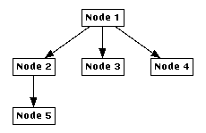

Tutorial Exercise 5.2: Building a new Graph from Scratch
With a connected graph editor application we can now interactively construct our own graphs in uDraw(Graph). Start with a root node by selecting menu Edit/Node/Insert Root. This creates a single node, more precisely a white box with text "Node 1". Like all inserted nodes, the new node is automatically selected after creation (i.e. it has a black shadow). Let us turn the selected node into a parent by using menu Edit/Node/Insert Child. This is a context sensitive menu which means that the currently selected node will become the parent of the new inserted node by creating an edge as well. You can also insert child nodes by using the pop-up menu of a node. Just press the right mouse button over the parent node and choose the Insert Child pop-up menu entry (Note: when the graph editor is connected, you will get a different pop-up menu over nodes or edges. The standard pop-up menu is available over free space). Insert some more child nodes until your graph looks like this:

Try to create this graph with the editor
If you have made a mistake with your graph, you can always delete a single node with menu Edit/Node/Delete Nodes or a node together with its subgraph using menu Edit/Node/Delete Subgraph (please refer to this link if you want to know what exactly a "subgraph" is). These operations are also available in the node pop-up menu.
Now we will create some edges between existing nodes. First select "Node 4" and then select "Node 5" so only these two nodes are selected. The order is important, so click on "Node 4" first! Hint: you have to hold down the SHIFT key for multiple selection. With two selected nodes, menu Edit/Edge/Insert Edge becomes available. Select this menu to create a directed edge pointing from parent "Node 4" to child "Node 5".
What would have happened in this situation if you had selected "Node 5" first and then "Node 4"? Try it by removing the previously inserted edge to go back to the old graph shown above. To do so, select this edge and use menu Edit/Edge/Delete Edge, or the same menu in the edge pop-up menu. Insert the edge again, but do not forget to select "Node 5" first and "Node 4" afterwards this time. As you can see, the parent and child node of the inserted edge are now exchanged. This will result in a completely different visualization for a hierarchical graph layout where edges are always pointing downwards from the parents to the children.
By the way, you already might have been noticed that you can also use the graph editor icons on the icon bar of the base window for quick access to the most frequently used operations of the graph editor.
End of Exercise 5.2. Go back to the Section 5 Overview.